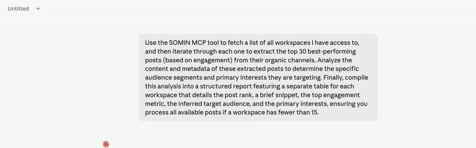
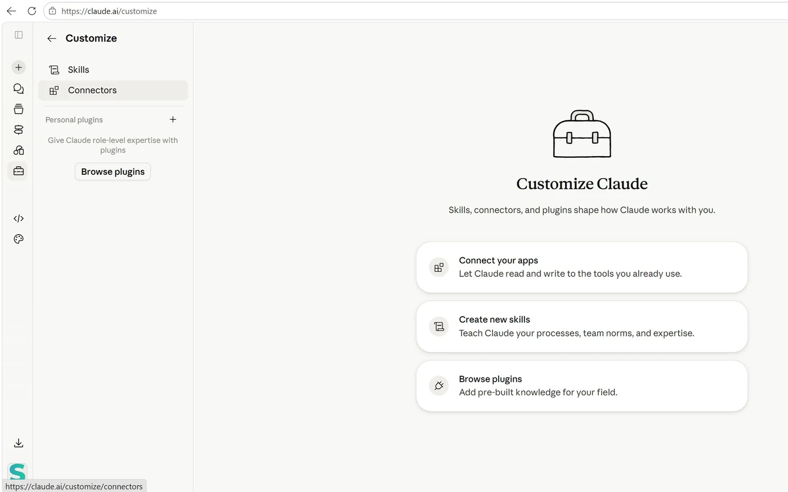
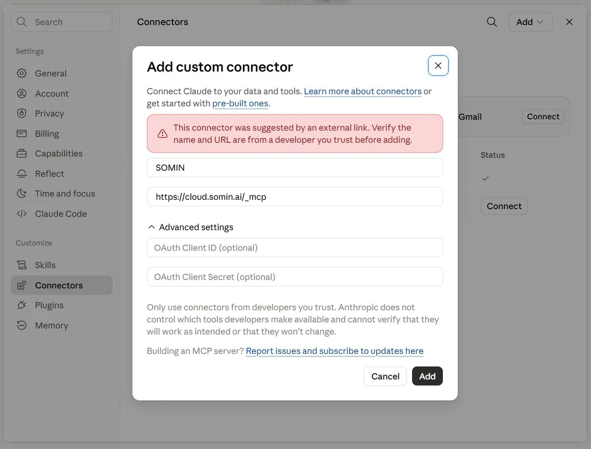
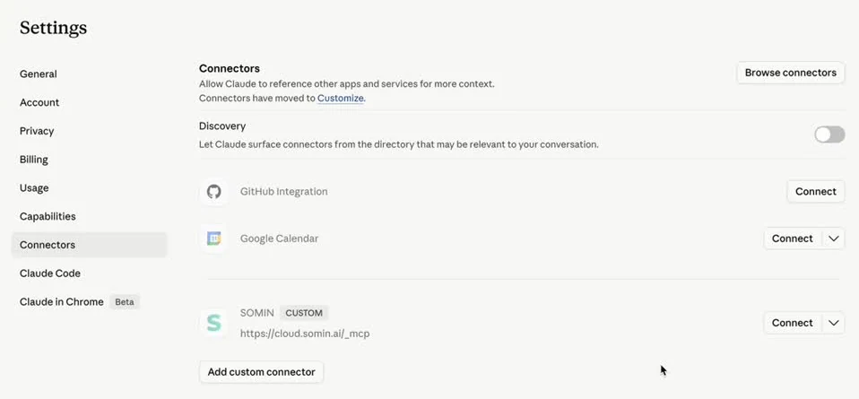

एजेंटिक मार्केटिंग टीम को अपने साथ ले जाएँ
सोमवार के कमरे का वर्कफ़्लो, Claude के लिए प्लगइन के रूप में। आठ स्किल्स आपके बाज़ार को सुनती हैं, प्रतिस्पर्धियों को डिकोड करती हैं, व्हाइटस्पेस ढूँढती हैं, ऑन-ब्रांड क्रिएटिव बनाती हैं और कंटेंट कैलेंडर तैयार करती हैं, सब आपके अपने SOMIN डेटा से।
- 8मुख्य स्किल्स
- 26कुल स्किल्स
- 5चरण, एक लूप
- SGD 0डाउनलोड मुफ़्त
The 2027 marketing team: smaller, faster, or obsolete? में लाइव दिखाया गया · सोमवार 12 अक्टूबर 2026 · WeWork @ Battery Road · टॉक देखें
तकनीकी पार्टनर SOMIN
आपका डाउनलोड शुरू हो गया है
अपने डाउनलोड फ़ोल्डर में marketing-mondays.plugin देखें।
फिर से डाउनलोड करेंClaude Code इस्तेमाल कर रहे हैं? .zip लें
डाउनलोड शुरू नहीं हुआ। “फिर से डाउनलोड करें” का उपयोग करें, या ask@mondays.marketing पर लिखें।
- पहले cloud.somin.ai पर SOMIN में साइन इन करें, फिर claude.ai में।
- प्लगइन अपलोड करें: Customize › Plugins ↗ › Add › Upload plugin › marketing-mondays.plugin।
- SOMIN कनेक्ट करें: प्लगइन खोलें, उसके Connectors टैब पर जाएँ, पूछे जाने पर Add पर क्लिक करें, फिर Connect।
- इसे परखें: Claude से पूछें कि वह कौन-से SOMIN वर्कस्पेस देख सकता है ↗
एक लूप, पाँच चरण
हर सोमवार हम एक वास्तविक संकेत डिकोड करते हैं। प्लगइन आपके अपने ब्रांड पर वही लूप चलाता है: सुनें, डिकोड करें, तय करें, बनाएँ, शिप करें। हर चरण एक स्किल है जिसे आप अकेले चला सकते हैं या अगले चरण से जोड़ सकते हैं।
- 01
सुनें
अपने ब्रांड और प्रतिस्पर्धियों को हफ़्ते-दर-हफ़्ते ट्रैक करें।
Pulse - 02
डिकोड करें
जानें कि कंटेंट किसके लिए है, क्या काम करता है और क्यों।
ऑडियंस और कंटेंटInsight Engine - 03
तय करें
व्हाइटस्पेस पहचानें और उसे रणनीति में बदलें।
लैंडस्केप रिपोर्टप्रतिस्पर्धियों के उत्पादडायवर्सिटी स्कोर - 04
बनाएँ
Figma में ब्रीफ़, डेक और ऑन-ब्रांड क्रिएटिव तैयार करें।
ब्रांड डेकFigma - 05
शिप करें
इसे कैलेंडर पर रखें और Postly में शेड्यूल करें।
रणनीति से Postly तक
सीधी भाषा में पूछें, तैयार आउटपुट पाएँ
Pulse
एडिशन, टाइमलाइन और SOMIN इनसाइट चेन के साथ एक साप्ताहिक सोशल परफ़ॉर्मेंस रिपोर्ट।
“मेरे [workspace] वर्कस्पेस में [brand] के लिए एक Pulse बनाओ।”
/marketing-mondays:somin-pulse
ऑडियंस और कंटेंट विश्लेषण
कीवर्ड, शेयर ऑफ़ वॉइस, ऑडियंस, पेन पॉइंट और प्रतिस्पर्धियों का सबसे अच्छा प्रदर्शन करने वाला कंटेंट।
“SOMIN का उपयोग करके [workspace] देखो: कीवर्ड हाइलाइट करो और दिखाओ कि प्रतिस्पर्धियों का कौन-सा कंटेंट काम करता है।”
/marketing-mondays:competitor-audience-content-analysis
Insight Engine डैशबोर्ड
पर्सोना, टेंशन, एंगल और स्टोरी की चेन, हर एक वास्तविक पोस्ट से समर्थित।
“[brand] की नवीनतम स्टडी के लिए एक Insight Engine डैशबोर्ड बनाओ।”
/marketing-mondays:somin-insight-engine-dashboard
लैंडस्केप रिपोर्ट
एक क्लिक करने योग्य लैंडस्केप पेज: निष्कर्ष, ब्रांड, एक सिफ़ारिश और क्या बनाना है।
“पिछले महीने के लिए [brand] और उसके प्रतिस्पर्धियों का लैंडस्केप ब्रेकडाउन बनाओ।”
/marketing-mondays:somin-landscape-report
प्रतिस्पर्धियों के उत्पाद और बाज़ार इनसाइट्स
प्रतिस्पर्धियों के ऑफ़र, छूट और उत्पाद लॉन्च का एक बहु-बाज़ार डैशबोर्ड।
“इस साल हमारे हर बाज़ार में प्रतिस्पर्धियों ने क्या लॉन्च किया, उसे ट्रैक करो।”
/marketing-mondays:competitor-product-market-insights
कंटेंट डायवर्सिटी स्कोर
प्रतिस्पर्धियों की तुलना में किसी ब्रांड के क्रिएटिव कितने विविध हैं, इसे 0 से 100 तक स्कोर करता है।
“प्रतिस्पर्धियों की तुलना में [brand] के क्रिएटिव कितने विविध हैं?”
/marketing-mondays:content-diversity-scorer
ब्रांड डेक
एक रणनीति ब्रीफ़िंग डेक: व्हाइटस्पेस, ट्रेंड, इनसाइट्स, कैलेंडर और क्रिएटिव।
“[market] में [brand] के लिए एक SOMIN ब्रीफ़िंग डेक बनाओ।”
/marketing-mondays:somin-brand-deck
रणनीति से Postly तक
रणनीति से लेकर आपकी Figma फ़ाइल में स्कोर किए गए क्रिएटिव, एक कैलेंडर, Postly शेड्यूलिंग और PDF तक।
“हमारी SOMIN रणनीति को दो हफ़्ते की पोस्ट में बदलो और उन्हें Postly में शेड्यूल करो।”
/marketing-mondays:somin-strategy-to-postly
साथ में 18 सहायक स्किल्स, जिन्हें मुख्य स्किल्स आपके लिए चलाती हैं, पर्सोना और टेंशन खोज से लेकर व्हाइटस्पेस विश्लेषण, कंटेंट कैलेंडर और डेक QA तक।
चार चरणों में प्लगइन इंस्टॉल करें
एक फ़ाइल में सब कुछ: 26 स्किल्स और SOMIN कनेक्टर, जिसके ज़रिए वे आपका डेटा पढ़ती हैं। आपको Claude (डेस्कटॉप ऐप या claude.ai) और एक SOMIN अकाउंट चाहिए; Figma और Postly वैकल्पिक हैं।
- 1
साइन इन करें: पहले SOMIN, फिर Claude
cloud.somin.ai पर उस अकाउंट से साइन इन करें जिसके वर्कस्पेस Claude को दिखने चाहिए। फिर claude.ai या Claude डेस्कटॉप ऐप खोलें।
सुनहरा नियम: जब आप Connect पर क्लिक करते हैं, तब जो भी SOMIN अकाउंट साइन इन होता है, Claude उसी से जुड़ता है, इसलिए SOMIN हमेशा पहले आता है।
- 2
प्लगइन अपलोड करें
Add › Upload plugin पर क्लिक करें और अपने Downloads से marketing-mondays.plugin चुनें। यह आपके प्लगइन्स में चालू अवस्था में दिखाई देगा। अलग से कोई स्किल लाइब्रेरी डाउनलोड नहीं करनी है: प्लगइन में पहले से सभी 26 स्किल्स हैं।
अभी तक डाउनलोड नहीं किया? पहले प्लगइन पाएँ।
- 3
प्लगइन के पेज से SOMIN कनेक्ट करें
प्लगइन अपलोड करने से आप किसी चीज़ में साइन इन नहीं होते। Customize › Plugins में Marketing Mondays खोलें और उसका Connectors टैब चुनें। SOMIN तीन में से एक स्थिति दिखाता है:
- Not added: Add पर क्लिक करें, फिर Connect।
- Not connected: Connect पर क्लिक करें।
- Connected: बस, हो गया।
Connect आपके साइन-इन किए हुए SOMIN अकाउंट से तुरंत जुड़ जाता है; कोई अतिरिक्त अनुमोदन स्क्रीन नहीं है। Team या Enterprise प्लान पर, अगर आप इसे खुद नहीं जोड़ पा रहे हैं, तो अपने Claude Owner से SOMIN कनेक्टर जोड़ने को कहें, फिर इसे अपने अकाउंट से कनेक्ट करें।
- 4
जाँचें कि यह काम करता है, फिर अपना पहला डेक चलाएँ
Claude से पूछें कि वह कौन-से SOMIN वर्कस्पेस देख सकता है ↗। कुछ ही सेकंड में वर्कस्पेस के नामों की सूची आने का मतलब है कि आप कनेक्ट हो गए हैं।
फिर पूरा वर्कफ़्लो आज़माएँ। यह प्रॉम्प्ट भरकर Claude खोलें ↗, Claude के पूछने पर एक वर्कस्पेस और एक ब्रांड चुनें, और उसे डेक बनाते हुए देखें:
मेरे पास SOMIN MCP कनेक्टेड है। मुझे उन वर्कस्पेस की सूची दो जिनके साथ मैं काम कर सकता हूँ, मेरे चुनने के बाद मेरे वर्कस्पेस में उपलब्ध ब्रांडों की सूची दो, ब्रांड चुनने के बाद मेरे चुने हुए ब्रांड के लिए 12 महीने का रणनीति डेक बनाओ। पूरे विश्लेषण के लिए /somin-brand-deck और SOMIN स्टाइलिंग के लिए /somin-brand-guideline का उपयोग करो। /scope-elicitation से शुरू करो।

Claude में चल रहा एक SOMIN प्रॉम्प्ट; Claude आपके लिए SOMIN कॉल करता है। आप मैसेज बॉक्स में / भी टाइप कर सकते हैं: मेन्यू हर स्किल को उस प्लगइन के साथ दिखाता है जिससे वह आई है।
Connectors टैब नहीं है, या SOMIN वहाँ से कनेक्ट नहीं हो रहा? इसके बजाय SOMIN को कस्टम कनेक्टर के रूप में जोड़ें
इस तरीके का उपयोग चरण 3 के बजाय करें, उसके साथ नहीं: दो SOMIN कनेक्शन Claude को वही टूल दो बार दे देते हैं।
पहले से भरा हुआ “Add custom connector” डायलॉग खोलें ↗
या खुद करें: Claude में Customize › Connectors › Add custom connector खोलें। दो फ़ील्ड भरें, Advanced settings के नीचे OAuth फ़ील्ड ख़ाली छोड़ें, और Add पर क्लिक करें। फिर CUSTOM टैग वाली SOMIN प्रविष्टि पर Connect पर क्लिक करें।
SOMINhttps://cloud.somin.ai/_mcpअंडरस्कोर रखें: /_mcp, न कि /mcp।पहले से भरे लिंक के साथ गुलाबी “suggested by an external link” सूचना सामान्य है। नाम और URL जाँचें, फिर Add पर क्लिक करें।



अटक गए?
- “Upload plugin” विकल्प नहीं है: आपका संगठन तय करता है कि सदस्य कौन-से प्लगइन जोड़ सकते हैं। अपने Claude Owner से इसकी अनुमति देने, या आपके लिए प्लगइन जोड़ने को कहें।
- SOMIN “Not added” दिखाता है और आप इसे जोड़ नहीं पा रहे: Team और Enterprise प्लान पर कनेक्टर Owner जोड़ता है। उनसे कहें, या ऊपर दिया कस्टम-कनेक्टर तरीका अपनाएँ।
- गलत SOMIN अकाउंट कनेक्ट हो गया: cloud.somin.ai पर साइन आउट करके फिर से साइन इन करें, फिर प्लगइन के Connectors टैब से SOMIN को डिस्कनेक्ट करके दोबारा कनेक्ट करें।
- Claude स्किल्स का उपयोग नहीं करता: Customize › Plugins में प्लगइन खोलें और जाँचें कि उसका टॉगल चालू है।
SOMIN कनेक्शन पर अधिक जानकारी: SOMIN का Claude कनेक्शन मैनुअल ↗ (उसके स्किल-लाइब्रेरी वाले चरण छोड़ दें: प्लगइन में स्किल्स पहले से शामिल हैं)। प्रश्न: ask@mondays.marketing।
Claude Code में: Claude ऐप में जोड़ा गया प्लगइन उसी अकाउंट से साइन इन किए गए Claude Code में सिंक हो जाता है; /reload-plugins चलाएँ। या एक सेशन के लिए claude --plugin-dir ./marketing-mondays.zip चलाएँ। फिर /mcp चलाएँ, SOMIN चुनें और साइन इन करें। स्किल्स /marketing-mondays:<skill> के रूप में दिखती हैं।
सवाल और जवाब
Marketing Mondays प्लगइन क्या है?
Claude के लिए एक मुफ़्त प्लगइन, जिसमें 12 अक्टूबर 2026 को Marketing Mondays में दिखाया गया एजेंटिक मार्केटिंग वर्कफ़्लो है। इसकी आठ मुख्य स्किल्स और 18 सहायक आपके बाज़ार को सुनती हैं, ऑडियंस और प्रतिस्पर्धियों को डिकोड करती हैं, व्हाइटस्पेस पर फ़ैसला करती हैं, ब्रीफ़, डेक और क्रिएटिव बनाती हैं और कंटेंट कैलेंडर तैयार करती हैं, सब आपके SOMIN डेटा से।
इसका उपयोग करने के लिए मुझे क्या चाहिए?
प्लगइन सपोर्ट वाला Claude: Claude डेस्कटॉप ऐप, claude.ai या Claude Code। आपको एक SOMIN अकाउंट भी चाहिए, क्योंकि हर स्किल SOMIN कनेक्टर के ज़रिए आपका अपना डेटा पढ़ती है। Figma और Postly कनेक्टर वैकल्पिक हैं, बनाने और शिप करने के चरणों के लिए।
क्या इसकी कोई क़ीमत है?
प्लगइन डाउनलोड करना मुफ़्त है। यह आपके अपने Claude प्लान और आपके अपने SOMIN अकाउंट पर चलता है।
क्या मैं इसे Claude Code में इस्तेमाल कर सकता हूँ?
हाँ। इसे Claude ऐप में इंस्टॉल करें और उसी अकाउंट से साइन इन किए गए Claude Code में /reload-plugins चलाएँ, या एक सेशन के लिए डाउनलोड की गई .zip के साथ claude --plugin-dir चलाएँ। स्किल्स /marketing-mondays:<skill> के रूप में दिखती हैं।
मेरा डेटा कहाँ जाता है?
स्किल्स आपके SOMIN वर्कस्पेस से पढ़ती हैं और रिपोर्ट, डेक और ड्राफ़्ट आपको वापस सौंपती हैं। स्किल्स के अंदर के उदाहरण काल्पनिक हैं, इसलिए आपके आउटपुट में केवल आपका डेटा इस्तेमाल होता है। डाउनलोड फ़ॉर्म में दिया गया आपका विवरण Marketing Mondays के तकनीकी पार्टनर SOMIN को जाता है।
मुझे इसमें मदद कैसे मिलेगी?
ask@mondays.marketing पर लिखें, या अपना सवाल सिंगापुर में Marketing Mondays के अगले सेशन में लेकर आएँ।
आपका सोमवार का संकेत, जब चाहें
प्लगइन पाएँ, उसे अपने ब्रांड पर चलाएँ, और जो मिले उसे अगले सेशन में लेकर आएँ।